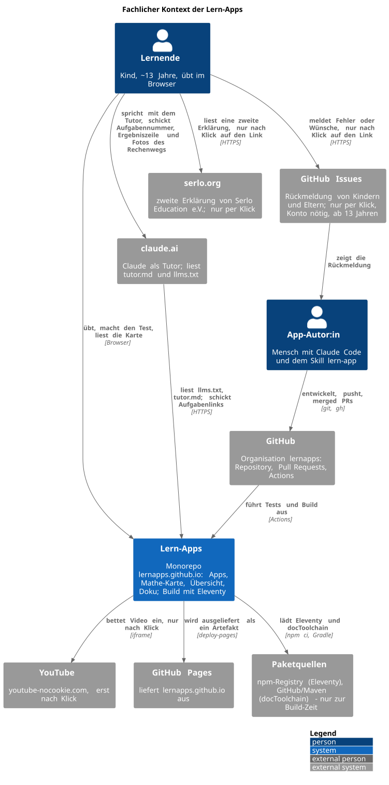
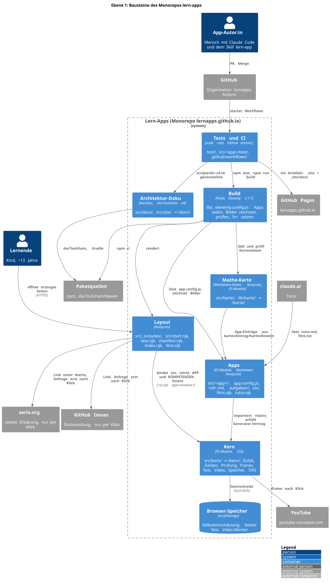
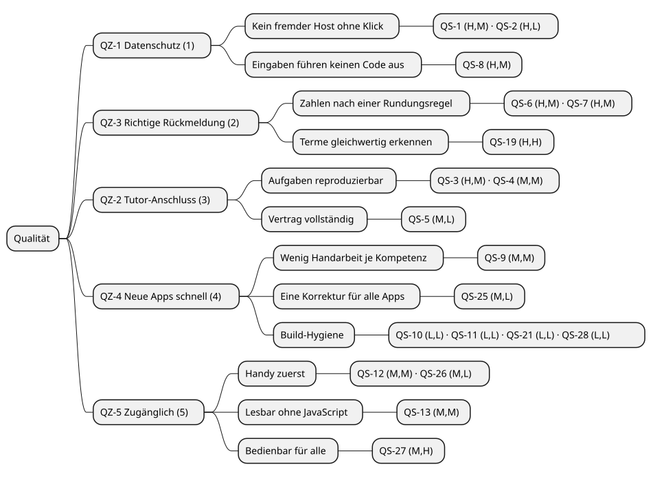
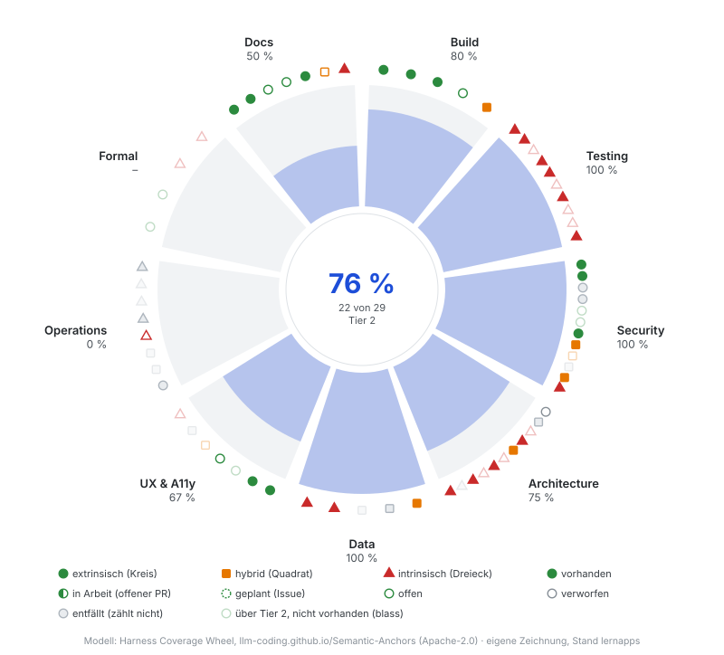

Version der Site |
0.12.0 ( |
Apps und Kompetenzen |
3 Apps mit 21 Kompetenzen |
Unit-Tests |
589 Tests, 589 grün (Lauf beim Doku-Build; 8.3) |
Browser-Tests |
166 Tests in 7 Specs (Playwright und axe-core, gezählt mit |
Pflicht-Checks laut Doku |
|
ADRs |
28 Accepted, 3 Superseded, 1 Accepted (inferred) (Kapitel 9) |
Risiken |
1 hoch, 16 mittel, 13 niedrig, 2 erledigt (Kapitel 11) |
Technische Schulden |
15 offen, 4 erledigt (Kapitel 11) |
Harness-Rad bis Tier 2 |
21 von 29 Schichten (8.16) |
Letzte ATAM-Bewertung |
25.09.2026 (Anhang Bewertungen) |
Letztes Harness-Audit |
24.09.2026 (Anhang Bewertungen) |

Diagramm in voller Größe öffnen (zum Zoomen auf dem Handy)


Diagramm in voller Größe öffnen (zum Zoomen auf dem Handy)


Diagramm in voller Größe öffnen (zum Zoomen auf dem Handy)

Je Szenario: (Wichtigkeit, Schwierigkeit), hoch (H), mittel (M), niedrig (L).

Diagramm in voller Größe öffnen (zum Zoomen auf dem Handy)

| W ↓ A → | A 1 | A 2 | A 3 |
|---|---|---|---|
3 |
|||
2 |
|||
1 |
Offene Risiken nach Wahrscheinlichkeit (W, Zeilen) und Auswirkung (A, Spalten), je 1 gering bis 3 hoch; erledigte fehlen.